CODING AGENTS AS PIXEL WORLD MODELS
traex/GPT-6.1-Sol · 0049
点击播放 · 原生 RGB 像素
逐轮保存的候选
回放视频、检查图与代码变化。
每份候选均可单独播放。实际图片检查记录在下方工具轨迹中。
候选 01播放与检查图
点击播放 · 原生 RGB 像素

展开代码变化
--- 上一保存版本
+++ 本次保存版本
@@ -0,0 +1,197 @@
+from pathlib import Path
+import math
+import numpy as np
+import cv2
+from PIL import Image, ImageDraw, ImageFilter
+from artifact_io import save
+
+ROOT = Path(__file__).resolve().parent
+S=5
+W,H=256,144
+original=np.array(Image.open(ROOT/'first_frame.png').convert('RGB'))
+
+def clean_background():
+ im=original.copy()
+ mask=Image.new('L',(W,H));d=ImageDraw.Draw(mask)
+ d.polygon([(156,42),(161,40),(169,42),(170,38),(175,36),(184,36),(187,41),(190,57),(187,62),(181,65),(173,66),(170,69),(160,69),(155,65)],fill=255)
+ d.ellipse((157,56,199,75),fill=255)
+ yy,xx=np.mgrid[:H,:W]
+ blend=cv2.GaussianBlur(np.array(mask).astype(float)/255,(0,0),.65)
+ clone=original[np.minimum(yy+27,H-1),np.minimum(xx+18,W-1)].copy()
+ im=im*(1-blend[:,:,None])+clone*blend[:,:,None]
+ edge=34.0+10.2*np.sqrt(np.maximum(0,1-((xx-181.1)/26.8)**2))
+ a=np.clip(edge-yy+.2,0,1)*blend*(xx>154)*(xx<208)
+ # Restore the lower front face of the stationary circular motor.
+ cyl=np.zeros(original.shape,float)
+ shade=1.0+1.5*np.cos((xx-181)*.15)
+ cyl[:,:,0]=10+shade
+ cyl[:,:,1]=11+shade
+ cyl[:,:,2]=8+shade
+ im=im*(1-a[:,:,None])+cyl*a[:,:,None]
+ # Narrow wooden paddle and its green shaft attachment on the disk.
+ mask=Image.new('L',(W,H));d=ImageDraw.Draw(mask)
+ d.polygon([(177,25),(184,24),(191,26),(195,27),(195,31),(191,32),(191,45),(185,46),(183,32),(176,31)],fill=255)
+ m=np.array(mask)>0
+ for y in range(24,47):
+ for x in range(175,196):
+ if m[y,x]:
+ if y<=29:
+ # Surface texture is taken from a neighbouring unmarked area.
+ im[y,x]=original[y-4,x-6]
+ elif y<edge[y,x]-0.7:
+ im[y,x]=original[min(y,40),max(155,x-13)]
+ else:
+ # Intact tabletop immediately beyond the platform.
+ im[y,x]=original[min(y+25,H-1),min(x+12,W-1)]
+ # Keep the rim smooth, where the old arm crossed it.
+ for y in range(30,45):
+ for x in range(183,192):
+ if m[y,x] and y>=30 and y<edge[y,x]+.6:
+ edget=30.0+1.0*np.sqrt(max(0,1-((x-181)/27)**2))
+ if y>edget:
+ k=min(1,max(0,edge[y,x]-y+.3))
+ col=np.array([11,12,9.5])
+ im[y,x]=im[y,x]*(1-k)+col*k
+ return Image.fromarray(np.uint8(np.clip(im,0,255)))
+
+bg=clean_background()
+# Bodies ordered from the struck domino to the last one before the large gap.
+# p: pivot on the leading lower edge; w: across the domino's broad face.
+bodies=[
+ dict(p=np.array([183.8,59.6]), w=np.array([6.8,2.35]), v=np.array([-4.5,-22.8]), f=np.array([-22.6,8.4]), thick=2.1, white=False, start=.18, settle=1.02, final=1.40),
+ dict(p=np.array([175.8,62.4]), w=np.array([7.0,2.65]), v=np.array([.35,-22.7]), f=np.array([-22.8,8.4]), thick=2.0, white=True, start=.37, settle=1.13, final=1.46),
+ dict(p=np.array([163.5,65.5]), w=np.array([7.35,2.55]), v=np.array([1.1,-22.5]), f=np.array([-23.,8.4]), thick=2.2, white=False, start=.60, settle=1.10, final=math.pi/2),
+]
+
+def angle(t,b):
+ if t<=b['start']:return 0.
+ if t>=b['settle']:
+ s=t-b['settle']
+ return b['final']-.026*math.exp(-s*7)*math.sin(s*21)
+ u=(t-b['start'])/(b['settle']-b['start'])
+ # Gravitational acceleration, then slowing as the domino lands on the pile.
+ q=u*u*(3-2*u)
+ return b['final']*q
+
+def vertices(b,theta):
+ p=b['p'];w=b['w'];v=b['v'];f=b['f'];th=b['thick']
+ # Forward lower edge stays on the tabletop. Thickness rotates upward.
+ back=-f/23*th*math.cos(theta)+np.array([0.,-1.])*th*math.sin(theta)
+ up=v*math.cos(theta)+f*math.sin(theta)
+ q=[p-w/2,p+w/2,p-w/2+back,p+w/2+back]
+ return np.array(q+[a+up for a in q])
+
+def poly(draw,points,fill):
+ draw.polygon([tuple(p*S) for p in points],fill=tuple(int(x) for x in fill))
+
+# Preserve subtle material variation with a deterministic texture, all sampled
+# and shaded locally rather than using a separate renderer.
+rng=np.random.default_rng(112)
+noise=rng.normal(0,.5,(H*S,W*S))
+
+def draw_body(layer,b,theta):
+ vs=vertices(b,theta)
+ dr=ImageDraw.Draw(layer)
+ # The forward face is visible. Its lighting increases as it faces upward.
+ sn=math.sin(theta); cs=math.cos(theta)
+ if b['white']:
+ front=np.array([157.,165.,181.]) + sn*np.array([26.,24.,21.])
+ side=np.array([175.,185.,202.])+sn*np.array([4.,4.,2.])
+ cap=np.array([194.,205.,218.])-sn*np.array([34.,37.,41.])
+ else:
+ front=np.array([17.,19.,16.])+sn*np.array([21.,23.,24.])
+ side=np.array([7.,9.,8.])+sn*np.array([9.,10.,11.])
+ cap=np.array([48.,55.,55.])-sn*np.array([27.,30.,29.])
+ # Opposite face, end caps, broad face and top narrow edge.
+ poly(dr,vs[[2,3,7,6]],front*.80)
+ poly(dr,vs[[0,2,6,4]],side*.85)
+ poly(dr,vs[[1,3,7,5]],side)
+ poly(dr,vs[[0,1,5,4]],front)
+ poly(dr,vs[[4,5,7,6]],cap)
+ # Fine bevel highlights keep each rectangular edge readable at 256px.
+ edge=(front*.7+cap*.3).astype(int)
+ dr.line([tuple(vs[4]*S),tuple(vs[5]*S)],fill=tuple(edge),width=2)
+ return vs
+
+def shadow_layer(t):
+ sh=Image.new('L',(W*S,H*S));d=ImageDraw.Draw(sh)
+ # Contact shadows are darkest underneath, while raised tops cast softer shadows.
+ for b in bodies:
+ th=angle(t,b);vs=vertices(b,th)
+ sn=math.sin(th);cs=math.cos(th)
+ offsets=[]
+ for i,v in enumerate(vs):
+ elev=(23*cs if i>=4 else 0)+ (b['thick']*sn if i%4>=2 else 0)
+ offsets.append(v+np.array([.42,-.10])*elev)
+ hull=cv2.convexHull(np.float32(offsets)).reshape(-1,2)
+ d.polygon([tuple(v*S) for v in hull],fill=95)
+ sh=sh.filter(ImageFilter.GaussianBlur(1.45*S))
+ contact=Image.new('L',sh.size);d=ImageDraw.Draw(contact)
+ for b in bodies:
+ vs=vertices(b,angle(t,b))
+ # Footprint on the table; projected underside after falling.
+ if angle(t,b)>.9:
+ hull=cv2.convexHull(np.float32(vs[[0,1,4,5]])).reshape(-1,2)
+ d.polygon([tuple(v*S) for v in hull],fill=68)
+ else:
+ p=b['p'];d.ellipse(((p[0]-5)*S,(p[1]-1)*S,(p[0]+4)*S,(p[1]+2)*S),fill=68)
+ contact=contact.filter(ImageFilter.GaussianBlur(.65*S))
+ return np.maximum(np.array(sh),np.array(contact)).astype(float)/255
+
+def rod(t,canvas):
+ # Clockwise motion viewed from above: the initially forward-pointing
+ # stick sweeps to the left and strikes the rear black domino.
+ omega=.94
+ a=omega*t
+ center=np.array([185.2,27.5])
+ initial=np.array([2.45,15.8])
+ end=center+np.array([initial[0]*math.cos(a)-21.8*math.sin(a),initial[1]*math.cos(a)+1.8*math.sin(a)])
+ dr=ImageDraw.Draw(canvas)
+ delta=end-center
+ norm=np.array([-delta[1],delta[0]]);norm/=np.linalg.norm(norm)
+ width=1.40
+ # Wood has both a pale illuminated face and a darker thin side.
+ p=[center+norm*width/2,end+norm*width/2,end-norm*width/2,center-norm*width/2]
+ poly(dr,np.array(p)+[.35,.45],[133,124,83])
+ poly(dr,p,[191,185,144])
+ dr.line([tuple((center+norm*.43)*S),tuple((end+norm*.43)*S)],fill=(216,210,169),width=3)
+ # Small green spindle connector, turning with the paddle.
+ unit=delta/np.linalg.norm(delta)
+ corners=np.array([center-unit*1.2-norm*1.65,center+unit*1.35-norm*1.65,center+unit*1.35+norm*1.65,center-unit*1.2+norm*1.65])
+ poly(dr,corners,[71,115,68])
+ poly(dr,corners+[-.15,-.3],[92,145,82])
+ for sign in [-1,1]:
+ q=center+norm*sign*3.3
+ dr.line([tuple(center*S),tuple(q*S)],fill=(74,130,69),width=4)
+
+
+def render(t):
+ image=bg.resize((W*S,H*S),Image.Resampling.BICUBIC)
+ sh=shadow_layer(t)
+ ar=np.array(image).astype(float)
+ ar*=1-sh[:,:,None]*.58
+ image=Image.fromarray(np.uint8(np.clip(ar,0,255)))
+ # The arm is higher than the domino tops, except at the first contact.
+ rod(t,image)
+ for b in bodies:
+ theta=angle(t,b)
+ if theta<=.001:
+ # exact original upright pixels in the image remain preferable before contact
+ draw_body(image,b,theta)
+ else:
+ draw_body(image,b,theta)
+ return np.array(image.resize((W,H),Image.Resampling.LANCZOS))
+
+
+def main():
+ frames=[original.copy()]
+ for i in range(1,20):
+ t=i/4
+ # A short realistic camera exposure, without synthetic frame interpolation.
+ a=[render(max(0,t+dt)) for dt in [-.012,0,.012]]
+ frames.append(np.uint8(np.round(np.mean(a,axis=0))))
+ frames=np.stack(frames)
+ save(frames,ROOT)
+ bg.save(ROOT/'.tmp'/'background.png')
+
+if __name__=='__main__':main()
候选 02播放与检查图
点击播放 · 原生 RGB 像素
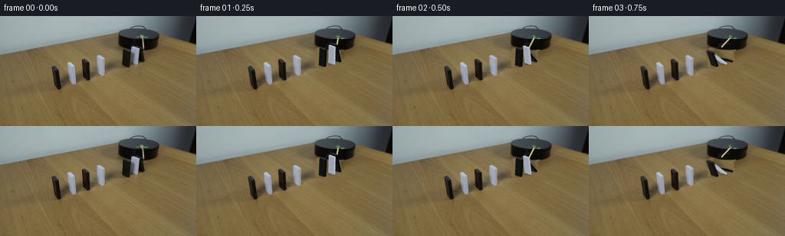
展开代码变化
--- 上一保存版本
+++ 本次保存版本
@@ -16,7 +16,7 @@
d.polygon([(156,42),(161,40),(169,42),(170,38),(175,36),(184,36),(187,41),(190,57),(187,62),(181,65),(173,66),(170,69),(160,69),(155,65)],fill=255)
d.ellipse((157,56,199,75),fill=255)
yy,xx=np.mgrid[:H,:W]
- blend=cv2.GaussianBlur(np.array(mask).astype(float)/255,(0,0),.65)
+ blend=cv2.GaussianBlur(np.array(mask).astype(float)/255,(0,0),1.15)
clone=original[np.minimum(yy+27,H-1),np.minimum(xx+18,W-1)].copy()
im=im*(1-blend[:,:,None])+clone*blend[:,:,None]
edge=34.0+10.2*np.sqrt(np.maximum(0,1-((xx-181.1)/26.8)**2))
@@ -45,7 +45,7 @@
im[y,x]=original[min(y+25,H-1),min(x+12,W-1)]
# Keep the rim smooth, where the old arm crossed it.
for y in range(30,45):
- for x in range(183,192):
+ for x in range(176,196):
if m[y,x] and y>=30 and y<edge[y,x]+.6:
edget=30.0+1.0*np.sqrt(max(0,1-((x-181)/27)**2))
if y>edget:
@@ -171,15 +171,19 @@
ar=np.array(image).astype(float)
ar*=1-sh[:,:,None]*.58
image=Image.fromarray(np.uint8(np.clip(ar,0,255)))
+ objects=Image.new('RGBA',image.size,(0,0,0,0))
# The arm is higher than the domino tops, except at the first contact.
- rod(t,image)
+ rod(t,objects)
for b in bodies:
theta=angle(t,b)
if theta<=.001:
# exact original upright pixels in the image remain preferable before contact
- draw_body(image,b,theta)
+ draw_body(objects,b,theta)
else:
- draw_body(image,b,theta)
+ draw_body(objects,b,theta)
+ # Match the source's modest focus softness and avoid computer-sharp edges.
+ objects=objects.filter(ImageFilter.GaussianBlur(.27*S))
+ image.paste(objects,(0,0),objects)
return np.array(image.resize((W,H),Image.Resampling.LANCZOS))
候选 03播放与检查图
候选 04播放与检查图
点击播放 · 原生 RGB 像素
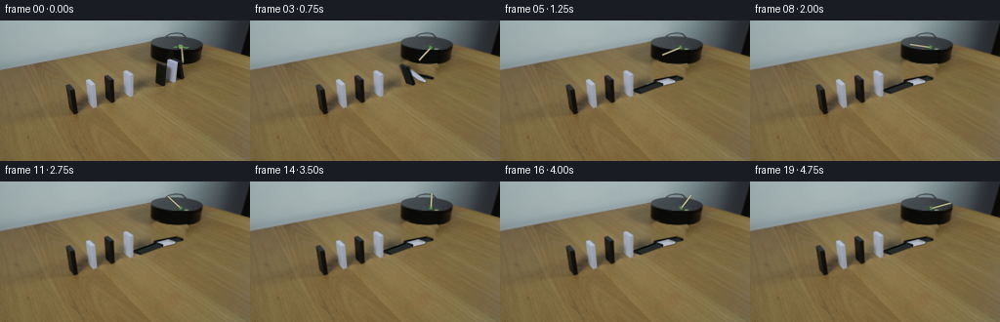
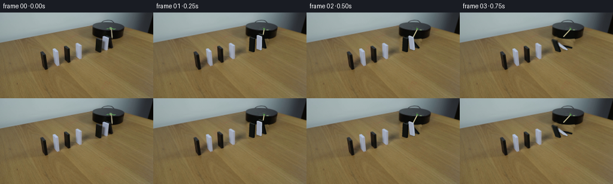
展开代码变化
--- 上一保存版本
+++ 本次保存版本
@@ -52,6 +52,22 @@
k=min(1,max(0,edge[y,x]-y+.3))
col=np.array([11,12,9.5])
im[y,x]=im[y,x]*(1-k)+col*k
+ # Reconstruct only the occluded area of the drum's front face. The same
+ # smoothly shaded cylindrical face continues behind the original dominoes.
+ region=np.clip((xx-161.5)/3,0,1)*np.clip((191.5-xx)/2,0,1)
+ region*=np.clip((yy-30.2)/1.4,0,1)
+ below=np.clip((edge-yy+.1)/1.1,0,1)
+ reg=region*below
+ face=np.zeros_like(im)
+ face[:,:,0]=10.2+1.6*np.cos((xx-181)*.1)
+ face[:,:,1]=11.0+1.6*np.cos((xx-181)*.1)
+ face[:,:,2]=8.2+1.3*np.cos((xx-181)*.1)
+ im=im*(1-reg[:,:,None])+face*reg[:,:,None]
+ # A narrow old tip was just below the rim; replace it with surrounding wood.
+ for y in range(44,49):
+ for x in range(186,193):
+ strength=np.clip((y-edge[y,x])/1.5,0,1)*np.clip((y-43)/2,0,1)*np.clip((49-y)/2,0,1)
+ im[y,x]=im[y,x]*(1-strength)+original[y+17,x+12]*strength
return Image.fromarray(np.uint8(np.clip(im,0,255)))
bg=clean_background()
可观测工具轨迹
实际执行的命令与返回图片。
命令 1exit 0
/bin/bash -lc "ls -la && cat prompt.txt && printf '\\n---RULES---\\n' && cat GENERATION_RULES.md"
命令 2exit 0
/bin/bash -lc "cat artifact_io.py && python - <<'PY'
from PIL import Image
im=Image.open('first_frame.png'); print(im.size); im.resize((1024,576)).save('.tmp/enlarged.png')
PY"命令 3exit 0
/bin/bash -lc "python - <<'PY'
from PIL import Image
im=Image.open('first_frame.png'); im.crop((150,10,214,72)).resize((768,744)).save('.tmp/crop.png')
import importlib.util
for m in ['numpy','PIL','scipy','cv2']:
print(m, bool(importlib.util.find_spec(m)))
PY"命令 4exit 0
/bin/bash -lc "python - <<'PY'
from PIL import Image
im=Image.open('first_frame.png'); im.crop((60,48,145,104)).resize((1020,672)).save('.tmp/row.png')
PY"命令 5exit 0
/bin/bash -lc "python - <<'PY'
from PIL import Image,ImageDraw
im=Image.open('first_frame.png').resize((1536,864),Image.Resampling.NEAREST)
d=ImageDraw.Draw(im)
for x in range(150,201,5):
d.line([(x*6,32*6),(x*6,75*6)],fill=(250,60,60),width=1); d.text((x*6,30*6),str(x),fill='red')
for y in range(35,71,5):
d.line([(150*6,y*6),(201*6,y*6)],fill=(250,60,60),width=1); d.text((145*6,y*6),str(y),fill='red')
im.crop((142*6,27*6,210*6,79*6)).save('.tmp/grid.png')
PY"命令 6exit 0
/bin/bash -lc "python - <<'PY'
from PIL import Image
im=Image.open('first_frame.png')
im.crop((152,34,195,72)).resize((860,760),Image.Resampling.NEAREST).save('.tmp/near.png')
PY"命令 7exit 0
/bin/bash -lc "cat > .tmp/testbase.py <<'PY'
import cv2,numpy as np
from PIL import Image,ImageDraw,ImageFilter
im=np.array(Image.open('first_frame.png'))
maskim=Image.new('L',(256,144));d=ImageDraw.Draw(maskim)
# whole assembly including original contact shadow
d.polygon([(160,40),(171,38),(175,36),(185,37),(190,43),(190,56),(207,61),(208,67),(197,72),(174,73),(156,71),(155,65),(157,43)],fill=255)
mask=np.array(maskim)
bg=cv2.inpaint(im,mask,4,cv2.INPAINT_TELEA)
# original platform foreground reconstruct holes
for y in range(35,45):
for x in range(155,192):
edge=35.5+8.0*np.sqrt(max(0,1-((x-181)/27)**2))
if mask[y,x] and y<edge:
bg[y,x]=np.array([12,13,10])+int((43-y)*.2)
# small stick mask
m=Image.new('L',(256,144)); dr=ImageDraw.Draw(m);dr.polygon([(183,26),(187,26),(190,44),(186,45)],fill=255)
m=np.array(m)
bg=cv2.inpaint(bg,m,2,cv2.INPAINT_TELEA)
Image.fromarray(bg).save('.tmp/base.png')
PY
python .tmp/testbase.py"命令 8exit 0
/bin/bash -lc "python - <<'PY'
from PIL import Image,ImageDraw
im=Image.open('first_frame.png').resize((2048,1152),Image.Resampling.NEAREST);d=ImageDraw.Draw(im)
for x in range(156,191,2):
d.line([(x*8,34*8),(x*8,70*8)],fill=(230,80,80),width=1);d.text((x*8,33*8),str(x),fill='red')
for y in range(36,70,2):
d.line([(155*8,y*8),(191*8,y*8)],fill=(230,80,80),width=1);d.text((152*8,y*8),str(y),fill='red')
im.crop((152*8,32*8,192*8,71*8)).save('.tmp/coord.png')
PY"命令 9exit 0
/bin/bash -lc "python - <<'PY'
from PIL import Image
im=Image.open('first_frame.png');im.crop((149,10,216,50)).resize((1005,600)).save('.tmp/platform.png')
PY"命令 10exit 0
/bin/bash -lc "cat > .tmp/bg2.py <<'PY'
import cv2, numpy as np
from PIL import Image,ImageDraw,ImageFilter
im=np.array(Image.open('first_frame.png'))
m=Image.new('L',(256,144));d=ImageDraw.Draw(m)
d.polygon([(156,42),(163,40),(170,43),(170,38),(175,36),(184,36),(187,41),(190,57),(187,61),(181,65),(172,66),(170,69),(160,69),(155,65)],fill=255)
d.ellipse((157,56,199,75),fill=255)
mask=np.array(m)
# Fill table using nearby same grain band
out=im.copy(); yy,xx=np.mgrid[:144,:256]
clone=im[np.minimum(yy+27,143), np.minimum(xx+18,255)].copy()
blend=cv2.GaussianBlur(mask.astype(float)/255,(0,0),.6)
out=(out*(1-blend[:,:,None])+clone*blend[:,:,None]).astype(np.uint8)
# rebuild black platform portion behind dominoes
end=34.2+10.1*np.sqrt(np.maximum(0,1-((xx-181.4)/27.0)**2))
a=np.clip(end-yy+.2,0,1)*blend*(xx>154)*(xx<209)
color=np.zeros(im.shape,float); color[:]=[10,11,8]
color+=np.maximum(0,(yy-38))*0.15[:,:,None] if False else 0
out=(out*(1-a[:,:,None])+color*a[:,:,None]).astype(np.uint8)
# old stick & marker
m=Image.new('L',(256,144));d=ImageDraw.Draw(m);d.polygon([(174,26),(185,24),(195,27),(195,32),(190,33),(192,45),(185,47),(183,33),(174,31)],fill=255)
out=cv2.inpaint(out,np.array(m),3,cv2.INPAINT_TELEA)
Image.fromarray(out).save('.tmp/bg2.png')
PY
python .tmp/bg2.py"命令 11exit 0
/bin/bash -lc "cat > generate.py <<'PY'
from pathlib import Path
import math
import numpy as np
import cv2
from PIL import Image, ImageDraw, ImageFilter
from artifact_io import save
ROOT = Path(__file__).resolve().parent
S=5
W,H=256,144
original=np.array(Image.open(ROOT/'first_frame.png').convert('RGB'))
def clean_background():
im=original.copy()
mask=Image.new('L',(W,H));d=ImageDraw.Draw(mask)
d.polygon([(156,42),(161,40),(169,42),(170,38),(175,36),(184,36),(187,41),(190,57),(187,62),(181,65),(173,66),(170,69),(160,69),(155,65)],fill=255)
d.ellipse((157,56,199,75),fill=255)
yy,xx=np.mgrid[:H,:W]
blend=cv2.GaussianBlur(np.array(mask).astype(float)/255,(0,0),.65)
clone=original[np.minimum(yy+27,H-1),np.minimum(xx+18,W-1)].copy()
im=im*(1-blend[:,:,None])+clone*blend[:,:,None]
edge=34.0+10.2*np.sqrt(np.maximum(0,1-((xx-181.1)/26.8)**2))
a=np.clip(edge-yy+.2,0,1)*blend*(xx>154)*(xx<208)
# Restore the lower front face of the stationary circular motor.
cyl=np.zeros(original.shape,float)
shade=1.0+1.5*np.cos((xx-181)*.15)
cyl[:,:,0]=10+shade
cyl[:,:,1]=11+shade
cyl[:,:,2]=8+shade
im=im*(1-a[:,:,None])+cyl*a[:,:,None]
# Narrow wooden paddle and its green shaft attachment on the disk.
mask=Image.new('L',(W,H));d=ImageDraw.Draw(mask)
d.polygon([(177,25),(184,24),(191,26),(195,27),(195,31),(191,32),(191,45),(185,46),(183,32),(176,31)],fill=255)
m=np.array(mask)>0
for y in range(24,47):
for x in range(175,196):
if m[y,x]:
if y<=29:
# Surface texture is taken from a neighbouring unmarked area.
im[y,x]=original[y-4,x-6]
elif y<edge[y,x]-0.7:
im[y,x]=original[min(y,40),max(155,x-13)]
else:
# Intact tabletop immediately beyond the platform.
im[y,x]=original[min(y+25,H-1),min(x+12,W-1)]
# Keep the rim smooth, where the old arm crossed it.
for y in range(30,45):
for x in range(183,192):
if m[y,x] and y>=30 and y<edge[y,x]+.6:
edget=30.0+1.0*np.sqrt(max(0,1-((x-181)/27)**2))
if y>edget:
k=min(1,max(0,edge[y,x]-y+.3))
col=np.array([11,12,9.5])
im[y,x]=im[y,x]*(1-k)+col*k
return Image.fromarray(np.uint8(np.clip(im,0,255)))
bg=clean_background()
# Bodies ordered from the struck domino to the last one before the large gap.
# p: pivot on the leading lower edge; w: across the domino's broad face.
bodies=[
dict(p=np.array([183.8,59.6]), w=np.array([6.8,2.35]), v=np.array([-4.5,-22.8]), f=np.array([-22.6,8.4]), thick=2.1, white=False, start=.18, settle=1.02, final=1.40),
dict(p=np.array([175.8,62.4]), w=np.array([7.0,2.65]), v=np.array([.35,-22.7]), f=np.array([-22.8,8.4]), thick=2.0, white=True, start=.37, settle=1.13, final=1.46),
dict(p=np.array([163.5,65.5]), w=np.array([7.35,2.55]), v=np.array([1.1,-22.5]), f=np.array([-23.,8.4]), thick=2.2, white=False, start=.60, settle=1.10, final=math.pi/2),
]
def angle(t,b):
if t<=b['start']:return 0.
if t>=b['settle']:
s=t-b['settle']
return b['final']-.026*math.exp(-s*7)*math.sin(s*21)
u=(t-b['start'])/(b['settle']-b['start'])
# Gravitational acceleration, then slowing as the domino lands on the pile.
q=u*u*(3-2*u)
return b['final']*q
def vertices(b,theta):
p=b['p'];w=b['w'];v=b['v'];f=b['f'];th=b['thick']
# Forward lower edge stays on the tabletop. Thickness rotates upward.
back=-f/23*th*math.cos(theta)+np.array([0.,-1.])*th*math.sin(theta)
up=v*math.cos(theta)+f*math.sin(theta)
q=[p-w/2,p+w/2,p-w/2+back,p+w/2+back]
return np.array(q+[a+up for a in q])
def poly(draw,points,fill):
draw.polygon([tuple(p*S) for p in points],fill=tuple(int(x) for x in fill))
# Preserve subtle material variation with a deterministic texture, all sampled
# and shaded locally rather than using a separate renderer.
rng=np.random.default_rng(112)
noise=rng.normal(0,.5,(H*S,W*S))
def draw_body(layer,b,theta):
vs=vertices(b,theta)
dr=ImageDraw.Draw(layer)
# The forward face is visible. Its lighting increases as it faces upward.
sn=math.sin(theta); cs=math.cos(theta)
if b['white']:
front=np.array([157.,165.,181.]) + sn*np.array([26.,24.,21.])
side=np.array([175.,185.,202.])+sn*np.array([4.,4.,2.])
cap=np.array([194.,205.,218.])-sn*np.array([34.,37.,41.])
else:
front=np.array([17.,19.,16.])+sn*np.array([21.,23.,24.])
side=np.array([7.,9.,8.])+sn*np.array([9.,10.,11.])
cap=np.array([48.,55.,55.])-sn*np.array([27.,30.,29.])
# Opposite face, end caps, broad face and top narrow edge.
poly(dr,vs[[2,3,7,6]],front*.80)
poly(dr,vs[[0,2,6,4]],side*.85)
poly(dr,vs[[1,3,7,5]],side)
poly(dr,vs[[0,1,5,4]],front)
poly(dr,vs[[4,5,7,6]],cap)
# Fine bevel highlights keep each rectangular edge readable at 256px.
edge=(front*.7+cap*.3).astype(int)
dr.line([tuple(vs[4]*S),tuple(vs[5]*S)],fill=tuple(edge),width=2)
return vs
def shadow_layer(t):
sh=Image.new('L',(W*S,H*S));d=ImageDraw.Draw(sh)
# Contact shadows are darkest underneath, while raised tops cast softer shadows.
for b in bodies:
th=angle(t,b);vs=vertices(b,th)
sn=math.sin(th);cs=math.cos(th)
offsets=[]
for i,v in enumerate(vs):
elev=(23*cs if i>=4 else 0)+ (b['thick']*sn if i%4>=2 else 0)
offsets.append(v+np.array([.42,-.10])*elev)
hull=cv2.convexHull(np.float32(offsets)).reshape(-1,2)
d.polygon([tuple(v*S) for v in hull],fill=95)
sh=sh.filter(ImageFilter.GaussianBlur(1.45*S))
contact=Image.new('L',sh.size);d=ImageDraw.Draw(contact)
for b in bodies:
vs=vertices(b,angle(t,b))
# Footprint on the table; projected underside after falling.
if angle(t,b)>.9:
hull=cv2.convexHull(np.float32(vs[[0,1,4,5]])).reshape(-1,2)
d.polygon([tuple(v*S) for v in hull],fill=68)
else:
p=b['p'];d.ellipse(((p[0]-5)*S,(p[1]-1)*S,(p[0]+4)*S,(p[1]+2)*S),fill=68)
contact=contact.filter(ImageFilter.GaussianBlur(.65*S))
return np.maximum(np.array(sh),np.array(contact)).astype(float)/255
def rod(t,canvas):
# Clockwise motion viewed from above: the initially forward-pointing
# stick sweeps to the left and strikes the rear black domino.
omega=.94
a=omega*t
center=np.array([185.2,27.5])
initial=np.array([2.45,15.8])
end=center+np.array([initial[0]*math.cos(a)-21.8*math.sin(a),initial[1]*math.cos(a)+1.8*math.sin(a)])
dr=ImageDraw.Draw(canvas)
delta=end-center
norm=np.array([-delta[1],delta[0]]);norm/=np.linalg.norm(norm)
width=1.40
# Wood has both a pale illuminated face and a darker thin side.
p=[center+norm*width/2,end+norm*width/2,end-norm*width/2,center-norm*width/2]
poly(dr,np.array(p)+[.35,.45],[133,124,83])
poly(dr,p,[191,185,144])
dr.line([tuple((center+norm*.43)*S),tuple((end+norm*.43)*S)],fill=(216,210,169),width=3)
# Small green spindle connector, turning with the paddle.
unit=delta/np.linalg.norm(delta)
corners=np.array([center-unit*1.2-norm*1.65,center+unit*1.35-norm*1.65,center+unit*1.35+norm*1.65,center-unit*1.2+norm*1.65])
poly(dr,corners,[71,115,68])
poly(dr,corners+[-.15,-.3],[92,145,82])
for sign in [-1,1]:
q=center+norm*sign*3.3
dr.line([tuple(center*S),tuple(q*S)],fill=(74,130,69),width=4)
def render(t):
image=bg.resize((W*S,H*S),Image.Resampling.BICUBIC)
sh=shadow_layer(t)
ar=np.array(image).astype(float)
ar*=1-sh[:,:,None]*.58
image=Image.fromarray(np.uint8(np.clip(ar,0,255)))
# The arm is higher than the domino tops, except at the first contact.
rod(t,image)
for b in bodies:
theta=angle(t,b)
if theta<=.001:
# exact original upright pixels in the image remain preferable before contact
draw_body(image,b,theta)
else:
draw_body(image,b,theta)
return np.array(image.resize((W,H),Image.Resampling.LANCZOS))
def main():
frames=[original.copy()]
for i in range(1,20):
t=i/4
# A short realistic camera exposure, without synthetic frame interpolation.
a=[render(max(0,t+dt)) for dt in [-.012,0,.012]]
frames.append(np.uint8(np.round(np.mean(a,axis=0))))
frames=np.stack(frames)
save(frames,ROOT)
bg.save(ROOT/'.tmp'/'background.png')
if __name__=='__main__':main()
PY
python generate.py"命令 12exit 0
/bin/bash -lc "python - <<'PY'
from PIL import Image
for i in [1,3,5]:
im=Image.open(f'frames/{i:02d}.png');im.resize((1024,576)).save(f'.tmp/f{i}.png')
PY"命令 13exit 0
/bin/bash -lc "python generate.py && python - <<'PY'
from PIL import Image
im=Image.open('frames/01.png').resize((1024,576));im.save('.tmp/new1.png')
im=Image.open('frames/05.png').resize((1024,576));im.save('.tmp/new5.png')
PY"命令 14exit 0
/bin/bash -lc "python - <<'PY'
from PIL import Image
Image.open('.tmp/background.png').crop((152,23,203,71)).resize((816,768)).save('.tmp/backcrop.png')
PY"命令 15exit 0
/bin/bash -lc "python generate.py && python - <<'PY'
import numpy as np
from PIL import Image
x=np.load('pixels.npz')['pixels']
a=np.array(Image.open('first_frame.png').convert('RGB')).astype(np.uint32)
p=(a[:,:,0]<<16)|(a[:,:,1]<<8)|a[:,:,2]
assert x.shape==(144,256,20)
assert np.array_equal(x[:,:,0],p)
assert len(list(__import__('pathlib').Path('frames').glob('*.png')))==20
print('Verified: 20 RGB frames, 256Ã144, 4 fps; frame 00 is exact.')
PY"视觉工具实际返回图片 1
视觉工具实际返回图片 2
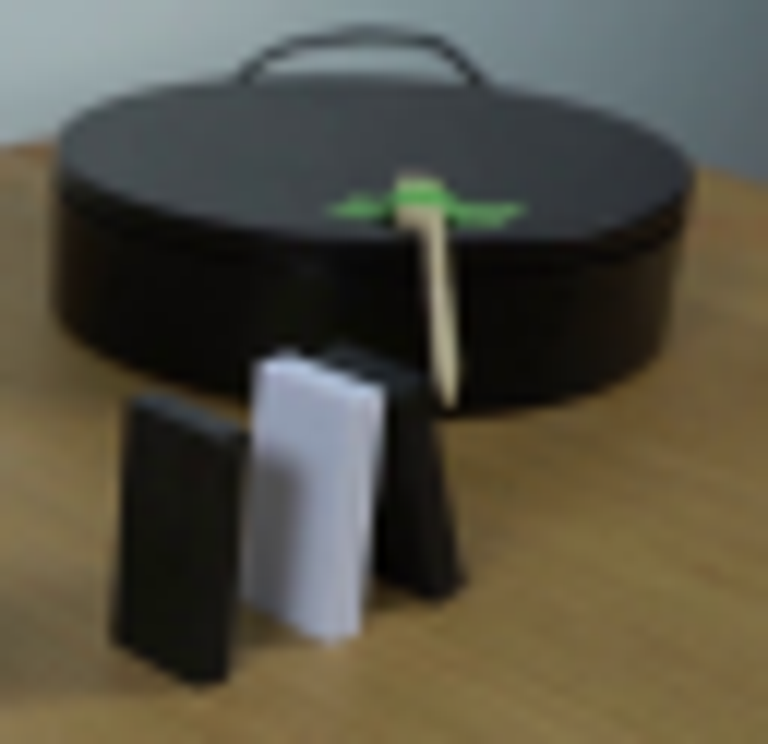
视觉工具实际返回图片 3
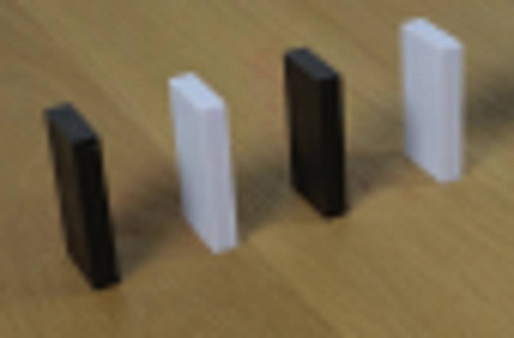
视觉工具实际返回图片 4
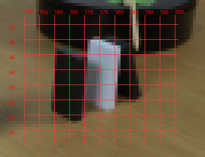
视觉工具实际返回图片 5
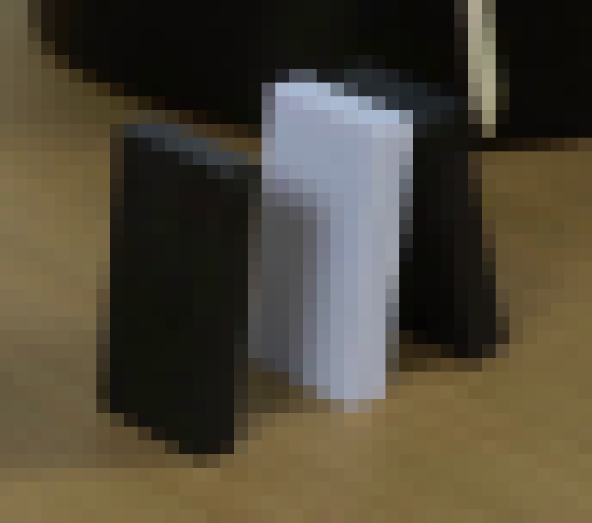
视觉工具实际返回图片 6
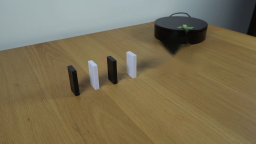
视觉工具实际返回图片 7
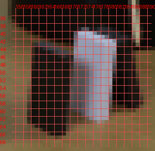
视觉工具实际返回图片 8
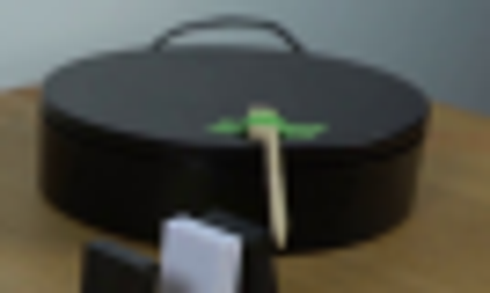
视觉工具实际返回图片 9
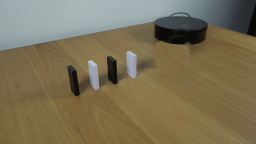
视觉工具实际返回图片 10
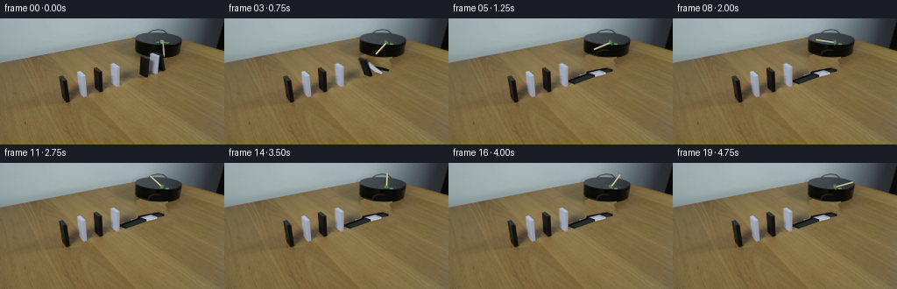
视觉工具实际返回图片 11

视觉工具实际返回图片 12
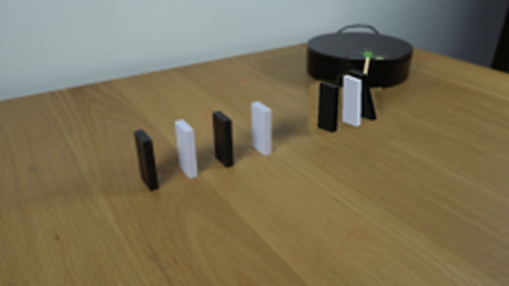
视觉工具实际返回图片 13
视觉工具实际返回图片 14
视觉工具实际返回图片 15
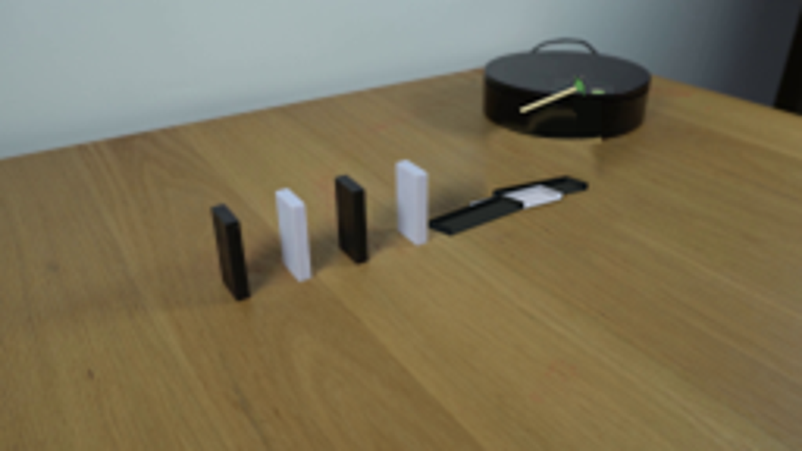
视觉工具实际返回图片 16
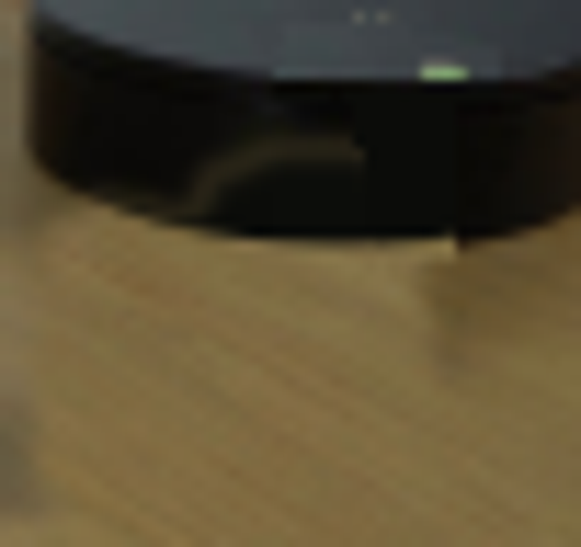
保存候选 4 份；完成命令 15 次；可验证图片返回 16 张。原始 API 响应与完整日志保留在本地。